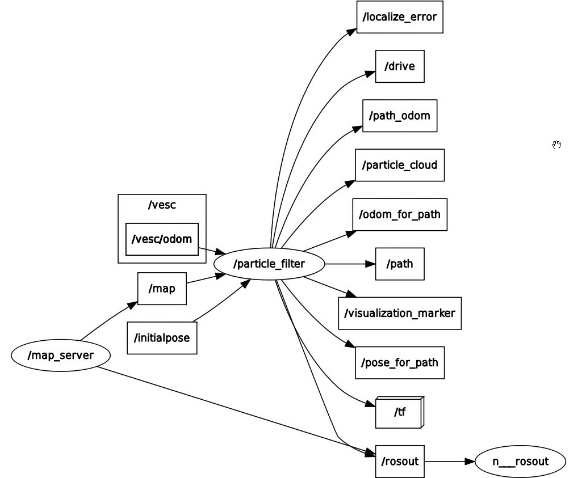
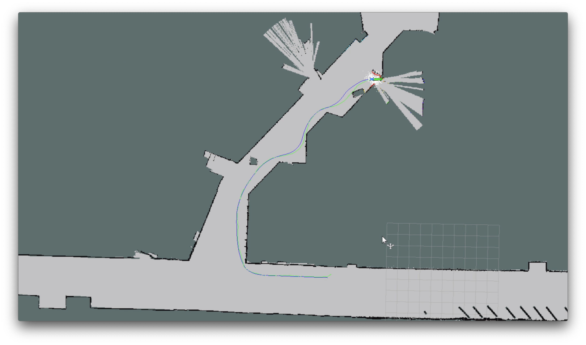
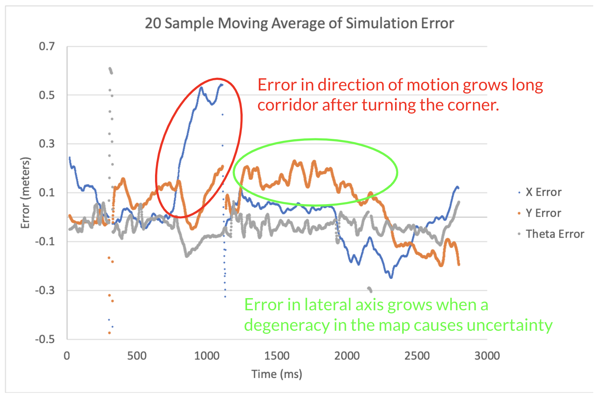

Lab 5
Lab 5: Localization Using A Particle Filter (MCL)
Table of Contents
- Overview and Motivation (Abbie)
- Monte Carlo/Particle Filter Localization (Abbie)
- ROS Implementation
- Simulation Results (Abbie)
- Experimental Results (Alex)
- Videos
1. Overview and Motivation
Localization, determining a robot's pose in the global frame given a map, is necessary for autonomous driving. In this lab, we aim to design and implement a localization algorithm that converges quickly to the actual location of our racecar in the Stata basement and is robust to unmapped objects, such as humans, in the environment.
2. Monte Carlo Localization (Particle Filter Localization)
The Monte Carlo Localization (MCL) algorithm combines a motion model and a sensor model in order to accurately model uncertainty in and provide a robust estimate of the racecar's actual location in the world. It represents a distribution of possible states as a collection of particles, each with an $xy$-coordinate and a heading. We initialize the point cloud around the initial position of the racecar by sampling 200 points from a Gaussian distribution centered around the point with a standard deviation of 0.5 meters in $xy$ and 0.5 radians in $\theta$ in order to model uncertainty in the initial estimate. When the racecar moves, the action taken by the racecar is applied to each particle to simulate the racecar moving from the configuration represented by that particle. Random noise is added to the movement to spread the particles out. Whenever the racecar receives a sensor reading, in this case a laser scan from the LIDAR, it resamples the particles based on how well the sensed data corresponds with the predicted state.
2.1 Motion Model
The motion model is based on linearized motion dynamics of the racecar. To propagate the particles, we take the current position of each particle and add to it the relevant odometry data with random Gaussian noise times the time increment passed since the particles were last updated. The added Gaussian noise has a standard deviation of 0.5 meters and a mean of 0. Because odometry data is received at irregular intervals, the time increment used is dynamically changed as the program executes. The equations we use can be seen here: $$x_{new} = x + (\frac{dx}{dt}+r)* \Delta t\quad \text(1)$$ $$y_{new} = y + (\frac{dy}{dt}+r)* \Delta t \quad \text(2) $$ $$\theta_{new} = \theta + (\frac{d\theta}{dt}+r)* \Delta t \quad \text(3) $$
| Symbol | Meaning |
|---|---|
| $x$ | Racecar $x$ position |
| $y$ | Racecar $y$ position |
| $\theta$ | Racecar heading |
| $r$ | Gaussian noise, mean of 0m, standard deviation of 0.5m |
| $\Delta t$ | Time increment |
Using this model we are able to effectively propagate particles for resampling with the sensor model.
2.2 Sensor Model
2.2.1 Data Preprocessing
In order to compare the simulated particle laser scans to the racecar’s laser scan, the probability that the simulated sensor has detected an object compared to the probability that the actual sensor detected an object must be computed. These probabilities incorporate four possible cases of a laserscan output:
$$\text{Measurement represents ground truth: } p_{hit}$$
$$p_{hit}(z_{t}| x_{t}, m) = \begin{cases}
\eta \frac{1}{\sqrt{2\pi\sigma^2}} \exp(-\frac{(z_t - z^*)^2}{2\sigma^2}) & \text{if} \quad 0 \leq z_{t} \leq z_{max}\\
0 & \text{otherwise}\\
\end{cases} \quad \text(4) $$
$$ \text{Obstacles in front of ground truth: }p_{short}$$
$$p_{short}(z_{t}| x_{t}, m) = \frac{2}{z^*} \begin{cases}
1 - \frac{z_{t}}{z^{*}} & \text{if} \quad 0 \leq z_{t} \leq z^{*}\\
0 & \text{otherwise} \\
\end{cases} \quad \text(5) $$
$$\text{Scan falls outside maximum range: } p_{max}$$
$$p_{max}(z_{t}| x_{t}, m) = \begin{cases}
1 & \text{if} \quad z_t = z_{max}\\
0 & \text{otherwise}\\
\end{cases} \quad \text(6) $$
$$\text{Scan is random noise: }p_{rand}$$
$$p_{rand}(z_{t}| x_{t}, m) = \begin{cases}
\frac{1}{z_{max}} & \text{if} \quad 0\leq z_{t} < z_{max}\\
0 & \text{otherwise} \\
\end{cases} \quad \text(7) $$
| Symbol | Meaning |
|---|---|
| $z_t$ | Measured distance |
| $z^*$ | Ground truth distance |
| $z_m$ | Maximum measurement distance |
| $\sigma$ | $p_{hit}$ standard deviation |
| $\eta$ | Normalization constant |
| $m$ | Static map |
We use $z_{m} = 10m$, $sigma = .5$, and $\eta = 0$. Each of these four outcomes are added together for an overall distribution and normalized with weight coefficients $\alpha_{hit} = .74$, $\alpha_{short} = .07$, $\alpha_{max} = .07$, and $\alpha_{rand} = .12$. Note that all $\alpha$ values add up to 1, giving a normalized probability distribution:

$ \textbf{[1] Total Probability Distribution: } z_t \text{versus probability for a given ground} \ \text{truth } z^{*} \text{shown in green.}$
Computing the probability value for each laser in the scan of each particle is computationally expensive. In order to increase the maximum number of particles that can be run in real-time on the racecar, it is more efficient to precompute these values in a lookup table. Thus, the racecar must only lookup the values from the table as opposed to computing them discretely, allowing for considerable runtime improvements and greater numbers of particles in the model. Each entry in our lookup table is discretized in .05 m increments along $z_t$ and $z^*$.

$\textbf{[2] Lookup Table Representation: } z^{*}\text{ and } z_t \text{ represented along the bottom axes} \ \text{with the vertical axis representing the probability of such a pair.}$
2.2.2 Particle Pruning
With a lookup table constructed, we can quantify the likelihood that each particle represents the racecar’s real position. The central step involves a process called ray-casting; given a map of the racecar’s environment, ray-casting will simulate the LIDAR scan appearing from the perspective of each particle. Each individual laser on each particle’s simulated scan will be compared to the corresponding laser on the observed LIDARlidar using the lookup table. For the lookup table, we use the simulated scan as the ground truth or $z*$ and the observed distanceoint as $z_t$. Once we have probabilities for each scan on the ray-cast, we can average each particle’s simulated scan probabilities to get an overall score representing how well a particle matches with the observation. Normalizing all particles' scores therefore gives a probability distribution approximating how likely the racecar’s pose matches every particle relative to the other particles. We then update the set of particles by sampling particles based on this probability distribution. Statistically, resampling over several iterations results in retaining particles close to the observation from the LIDAR while pruning those which do not. However, it should be noted that pruning does not imply fewer particles; there is simply a higher chance that some high-scoring particle will get sampled multiple times while low-scoring particles will be sampled less or not at all.
In the visualization, this pruning looks like a convergence of the point cloud.
3. ROS Implementation
$\textbf{[3] rqt graph: } \text{Representation of rosnodes and topics in our system}$
The central ROS node controlling the localization is /particle_filter. /particle_filter contains the motion model, sensor model, and a variety of peripheral functionality concerning visualization and transformations. It takes in data from the /vesc_odom and /laser to access the odometry and LIDARlidar data respectively, and use them to inform motion and sensor models. The topic /initialpose informs the initial position of the racecar. The five main topics to which /particle_filter publishes are /particle_cloud, /visualization_marker, /tf, /pose_for_path, and /odom_for_path. /particle_cloud allows us to visualize particles as dots on the map. /visualization_marker constantly publishes the average position of the particles as a representation of the model's guess as to the racecar's position. /tf publishes a transformation from the predicted position of the racecar to the map as an offset in x, y, and $\theta$. The transformation is not needed in simulation since the global frame can define the position of the map and racecar without need for an additional transformation. /pose_for_path and /odom_for_path publish poses respectively defined by the model's guess of the racecar's position and the position guessed purely by odometry. The node /make_path listens to /pose_for_path and /odom_for_path and publishes path messages representing the robot's poses as predicted by our particle filter and raw odometry. The path message for particle filter is published to the topic /path and the raw odometry estimate is published to /path_odom.
4. Simulation Results
To test our particle filter in simulation, we ran our wall-following algorithm from Lab 3 in conjunction with our localization module. To determine our ground truth, we plotted the path generated by the odometry. We are able to use odometry as our ground truth because in simulation, there is no wheel slippage or differences in actual actuation from the command input that would cause odometry to be unreliable for localization in the real world. Thus, we are able to use the odometry path to calculate error in the estimate produced by our particle filter. The average error in position and in heading are very low, $0.02m$ in $x$, $0.03m$ in $y$, and $0.04$ rad in $\theta$.
$\textbf{[4] Estimated and ground truth paths from our simulation: } \text{Estimate shown in green. Ground Truth shown in blue.}$
$\textbf{[5] 20-Sample moving average of error calculated at each time step }$
5. Experimental Results
To test the real world accuracy of the system, we setup two specific key points in the basement of Stata, one in a detailed environment and one in an empty hallway. We drove the racecar over each keypoint four consecutive times, with thirty seconds of random driving between stops at the keypoints. During each stop, we measured the x and y positions (in m) and theta (in rad). We also took the average error and standard deviation as metrics for the correctness and consistency of the data.
| x (m) | y (m) | Theta (rad) | |
|---|---|---|---|
| Ground Truth | -16.25 | 9.61 | -1.97 |
| Stop #1 | -16.15 | 9.58 | -1.97 |
| Stop #2 | -16.18 | 9.47 | -1.98 |
| Stop #3 | -16.20 | 9.56 | -1.98 |
| Stop #4 | -16.21 | 9.51 | -1.98 |
| Avg Err | .064 | .080 | 0.0075 |
| Std Dev | .037 | .055 | .005 |
$\textbf{[6] Detailed environment: } \text{Table shows data and analysis of } \\ \text{consecutive stops along a specific point in a well detailed area } \\ \text{of the Stata basement.}$
| x (m) | y (m) | Theta (rad) | |
|---|---|---|---|
| Ground Truth | -24.15 | -2.26 | -3.31 |
| Stop #1 | -24.24 | -2.37 | -3.30 |
| Stop #2 | -23.71 | -2.23 | -3.31 |
| Stop #3 | -23.91 | -2.26 | -3.32 |
| Stop #4 | -23.78 | -2.32 | -3.32 |
| Avg Err | 0.285 | 0.050 | 0.0075 |
| Std Dev | 0.023 | 0.23 | .008 |
$\textbf{[7] Empty Hallway (along x direction)} \text{Shows data } \\ \text{and analysis of consecutive stops along a specific } \\ \text{point in a poorly detailed hallway in the Stata } \\ \text{basement.}$
As shown, the error along any dimension with close or distinctive features has an error less than .1m and standard deviations less than .06m. Conversely a dimension with far and indistinct features (i.e. the x dimension along the hallway) has a larger error. The increased error is expected since the maximum range of the LIDAR is 10m, and the hallway gives few features defining the x dimension within 10m. However, overall we do not believe the level of error for indistinct dimensions compromises the success of our system. Such situations maintained an acceptable level of precision, especially given the high accuracy and low noise for tests in more detailed areas.